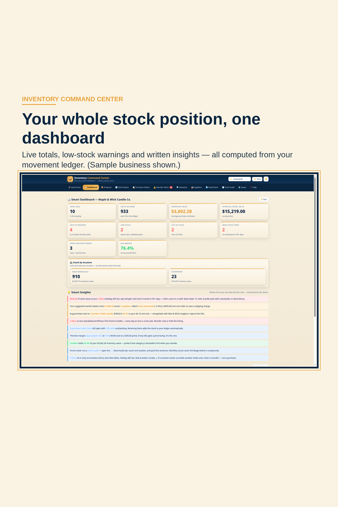
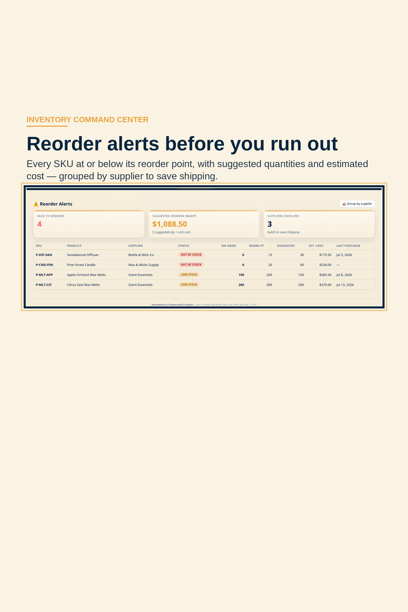

How to Run Inventory on a Movement Ledger — and Never Type a Stock Count Again
Most small businesses track stock the same way: a spreadsheet with a number in a cell. Somebody sells three candles, somebody else forgets to update the cell, and by the end of the month the sheet says you own things you sold in week one. The number looks authoritative. It’s fiction.
There’s an older, better method — the one real warehouses use — and it’s simple enough to explain in one sentence: never store the count; store the movements, and let the count be arithmetic. Every unit that enters is a Stock In line. Every unit that leaves is a Stock Out. A correction is an Adjustment, with a reason. Your stock on hand is opening stock plus every movement since — a number that can always be traced back to the day it changed, and the person who changed it.

Three habits make the ledger work:
1. Log the movement, not the result. Receiving a purchase order? Log the receipt. The count moves on its own — and when a purchase order is partially received, the order itself shows OPEN → PARTIAL → RECEIVED, so “did the rest of that order ever arrive?” stops being a memory test.
2. Count on a cycle, not in a panic. Instead of one miserable annual stocktake, count a few shelves every week — your most valuable stock most often (that’s the ABC idea: A-items weekly, C-items rarely). Type what you found; the variance computes itself; post the adjustments in one click. The ledger keeps the audit history, so a discrepancy is a question with an answer, not a mystery.

3. Let the system watch the thresholds. A reorder point per SKU means the “we’re out” moment arrives as an alert before it arrives as a lost sale — with the exact order cost attached, and orders grouped by supplier so you’re not paying shipping three times to the same warehouse.
This is exactly how our Inventory Command Center is built. Stock is never typed anywhere in the app — it is opening stock plus every Stock In, Stock Out and Adjustment you log, valued three ways (average cost, FIFO, unit cost) from the same ledger. It runs in any browser, keeps your records on your own device, and it’s a single buy-once download: two full apps — the tracker plus a reseller profit & listing calculator — a warehouse-operations companion, a web edition and a spreadsheet, with no subscription behind any of it.
The honest limits: it’s a single-device, single-user system, and it doesn’t connect to Shopify, Etsy or QuickBooks — every movement is logged by hand. That’s the deliberate trade. In exchange, your stock numbers are yours: traceable, exportable, and still true in five years, whatever happens to any software company’s pricing page.
★ MORE FROM ADSA STUDIO DESIGN — every ADSA business tool is buy-once: no subscription, yours forever.
Inventory Command Center — stock, SKUs, reorder alerts and purchase orders
Bookkeeping Command Center — income, expenses, profit & loss and sales tax
Money Command Center — budget, bills, debts and net worth on one dashboard
Service Business Command Center — jobs, invoices and books for contractors and trades
Opens Etsy in a new tab.